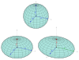

ellipsoid
abstraction

Source: Wikipedia
Wikipedia Page (Something wrong with this association? Let us know.)
Wikidata Page (Something wrong with this association? Let us know.)
Occurs in:
- earth_datum_ellipsoid__eccentricity
- earth_datum_ellipsoid_equator__radius
- earth_datum_ellipsoid__flattening_ratio
- earth_datum_ellipsoid__inverse_of_flattening_ratio
- earth_datum_ellipsoid__polar_radius
- earth_datum_ellipsoid__second_flattening_ratio
- earth_datum_ellipsoid__third_flattening_ratio
- earth_datum_ellipsoid_surface_point-pair_geodesic__distance
- earth_ellipsoid_equator__radius
- earth_ellipsoid__inverse_of_flattening_ratio
- earth_ellipsoid__polar_radius
- mars_ellipsoid_equator__radius